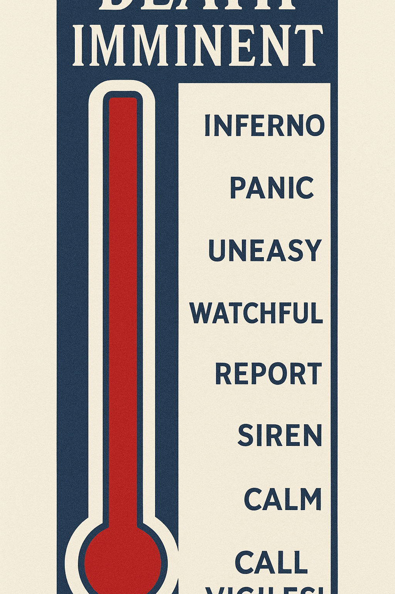
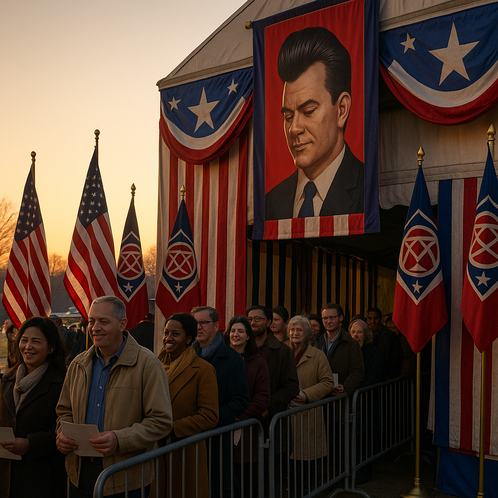

TAFAJ TERROR ALERT
STATUS: RED — Remain perfectly calm.
Monitor official channels. Report geometric bird formations and suspicious serenity immediately.
You'll Likely Die

Call the Vigiles!
Breaking News!

|
Grundy Apologizes for River Glow Incident; Declares It a “Victory for Transparency.”Industrial optimism shines through the night as officials praise “patriotic luminescence.” Filed 08:00 · Civic Desk |

Patriotic Census Finds 104% Participation — Officials Hail “Overachievement of Unity.”Filed 09:30 · National Service Desk |

Neighbors Sign Friendship Correction Pact After Border MishapFiled 13:00 · Foreign Desk |

Public Smiling Hours Extended; “Cheerful Rigor” PraisedFiled 11:00 · Ministry of Wellbeing |

Docu-Series Premiere: “Grundy Explains Himself”Filed 17:00 · Channel OTI |

Hammer of Grundy — Live on the White House Lawn
One Night Louder · Gates 17:00 · Ceremonial Ear Protection Provided